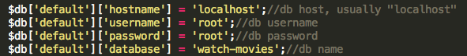
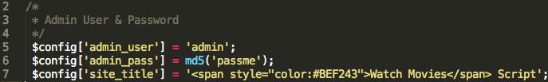

“PHP Watch Movies Script” Documentation by “crivion” v2.5
“PHP Watch Movies Script”
Thank you for purchasing my script. If you have any questions that are beyond the scope of this help file, please feel free to email via my user page contact form here. Thanks so much!
Table of Contents
- Installing database
- Installing script
- Configure Website Title & Admin Credentials
- Admin Area Overview
- Upgrading from 2.3 to 2.5
A) Installing DATABASE - top
- Go to your hosting Control Panel and point to the database manager (like PHPMyAdmin)
- Create a MySQL database and ASSIGN a MySQL User to it.
Go to phpMyAdmin and the database you've just created.
Import the file located into "database_upload/db.sql" folder.
- Step two is to open application/config/database.php with any text editor and update mysql database connection info
LINES 51 TO 54

B) Installing the SCRIPT - top
- Connect to your hosting and upload the extracted zip file folder of the script to your domain. (must be under either root or subdomain. No subfolders please.)
- Make sure .htaccess file is included otherwise the script will mallfunction as the file is required to do the mod_rewrite SEO friendly URL's job
C) Configure Website Title & Admin Credentials - top
- Navigate to application/config/config.php and the same you did for the database file Open with a text editor.
- For the admin credentials edit lines 5 & 6
-
For the site title edit line 7

D) Admin Area Overview - top
- Navigate to your-website-url.com/admin and login with the credentials you've just configured earlier.
- Adding new movies: : navigate to Add movies tab. If you wish, if available you can enter the IMDB URL and the informations should automatically be completed.
- Movie Links & Tabs : go to movies tab and click "X links". You will have an option to add more links, approve (if any pending) or edit/remove a specific movie/tv show links.
- TOS Page: Point to TOS tab & there's a text area accepting HTML tags as well
- Configure ADS:Point to ADS tab & there's a text area accepting HTML tags as well
E) Upgrading from 2.3 to 2.5 - top
For upgrading from version 2.3 to 2.5
Replace the following files (reupload & overwrite):
Controllers Changed:
===
application/controllers/home.php
application/controllers/watchmovies.php
Helpers Changed:
===
application/helpers/related_sidebar_helper.php
Views Changed:
===
application/views/home.php
application/views/watch-movies.php
application/views/all-movies.php
application/views/header.php
application/views/sidebar.php
application/views/join-now.php
application/views/login.php
CSS Changed:
==
css/style.css
Logo Changed:
====
img/video.png
Alex Crivion
Go To Table of Contents